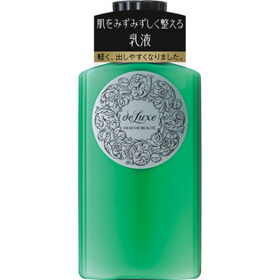

返回列表
产品名称：ドルックス フレーシュボーテN

資生堂 ドルックス フレーシュボーテN １５０ｍｌ
メーカー 資生堂
JANコード 4901872241293
商品の特徴
日やけ、雪やけ後の肌をみずみずしく整える乳液
○日やけ、雪やけの後の肌をみずみずしくととのえます。
○さっぱりとした感触でなじみがよく、しなやかな肌を保ちます。
成分・分量
-
用法及び用量
＜使用方法＞
●化粧水のあと、適量を肌になじませます。
＊日やけ後は、肌の赤みやひりつきがおさまってからお使いください。